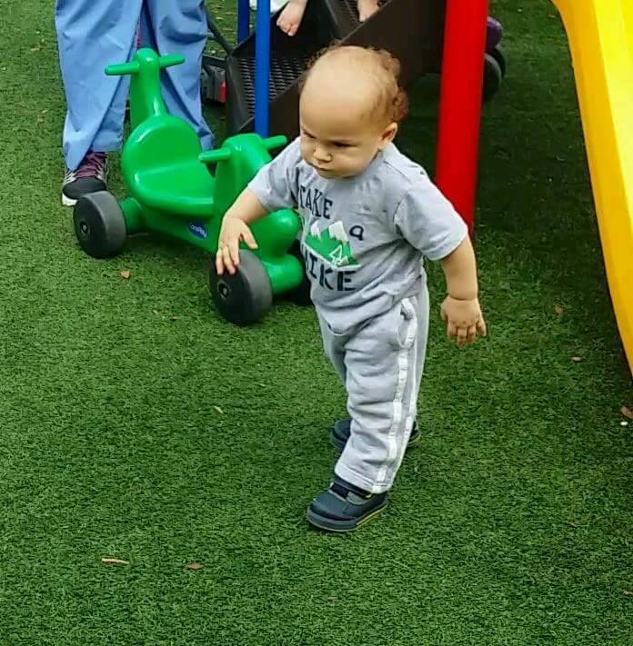

WordCamp Orlando is the oldest Florida WordCamp conference and it has 3 local WordPress meetups to support it.
I was excited to go to my first out-of-town WordCamp. Also my first road trip by myself, and at my age, I can say this was way overdue.
I am no stranger to WordCamps. I went to my first WordCamp Miami in 2017 and have been an Organizer for WordCamp Miami for the past two years.
I did meet a lot of new cool people as well as re-familiarize myself with some acquaintances.
Sessions I Attended
WordCamp Orlando runs over 3 days. The first day, Friday is a Workshop Day, so you pick a topic and immerse yourself in that all day. The next two days, Saturday and Sunday have 3 tracks, but you can mix and match tracks to get a good overview of many topics and niches in the WordPress space.
These are the sessions I attended:
Day
Sessions
Speakers
Friday
Recurring Revenue
Nathan Ingram
Friday
Creating a Five-Star Customer Experience
Michele Butcher-Jones
Friday
How ANYONE can make MORE MONEY with WordPress
Jason Coleman
Friday
Slay Your Day: Practical Tips to Keep Your Projects on Track
Jessica Frick
Saturday
What I Wish I’d Known About Freelancing
Nathan Ingram
Saturday
So, you want to be a website agency owner…
Charles Johnson
Saturday
How to easily audit your WP site for Accessibility
Steve Curtis
Saturday
How to Make Your Website Stand Out in Search Results
The beds were very comfortable. I had two beds, but only one me, so I piled the all the pillows onto one bed for me and that was heaven. It was cute that when I came back from day two of WordCamp, housekeeping had neatly stacked all the pillows on one bed for me.
After I got the wi-fi working, my family and I were able to Facetime each other so we could watch Battlebots together, like we do every Friday night.
Seeing each other on Facetime.
I ate at the nearby Denny's. The service was amazingly good and I overtipped; she deserved it. I am reminded of the fact that they tore down the Denny's near me for a Whole Foods. #sad
Orlando in General
I do hope I can visit Orlando again, this time with my family.
My little family: Lucas, George, me and AJ
The last time we went to Orlando we visited, and very much enjoyed, Fun Spot. My oldest son was much younger and my youngest had not yet been born. Perhaps my little one can enjoy it in about 5 years and his big brother can show him how it's done.
I wouldn't mind visiting Disney and some of the newer things Universal Studios has created.
Here's a picture of my youngest, just because:

AJ on the warpath at pre-k
One thing I did not enjoy about Orlando was the driving. I felt more stressed out than when I drive in Miami, and that's saying something.